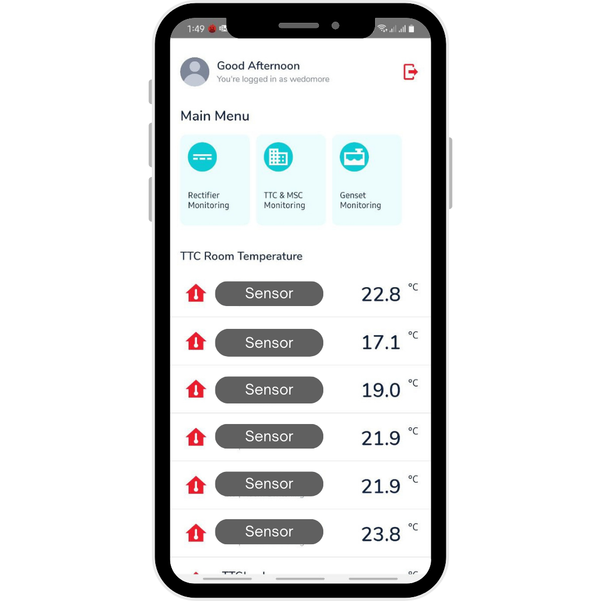
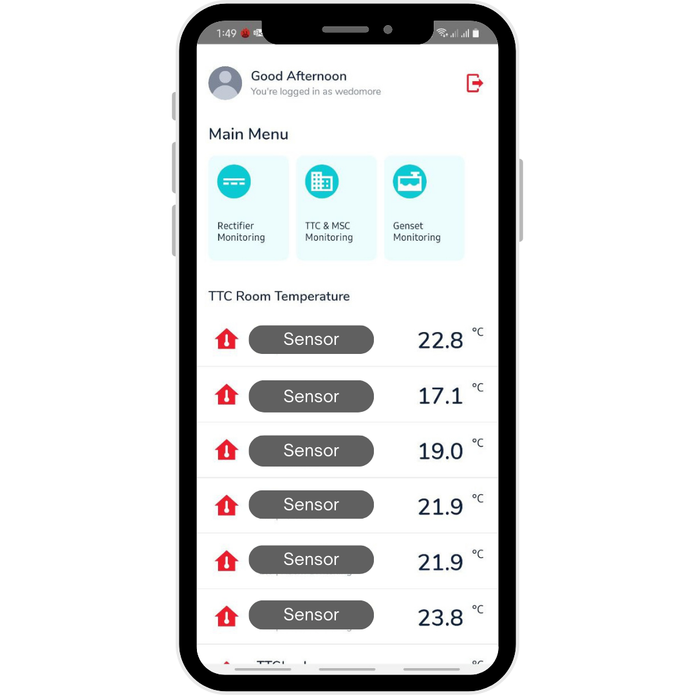

Hi, I'm Yudi!
Front-End Developer
Telkomsel
2009 - 2013
Electrical Engineering
2014
Network Designer
2014 - 2016
Project Engineer
2017 - 2021
Radio Network Engineer
2021 - Now
Front-End Developer
Career Journey
Before Front End
I was a Network Engineer
Before Front End
But sometimes, I learn to develop Mobile Apps
 

Azka Home
a mobile internet of things application built using Firebase Realtime Database, and Arduino
Before Front End
Cari RS
a mobile application built using React Native, the main function of this app is to search for bed availability in registered hospitals throughout Indonesia during the Covid-19 pandemic.
Before Front End
MyRTPO
a mobile application to support business as usual as a network operations engineer.
Before Front End
WeDoMoRe
a mobile application to monitor Power and Data Center Assets such as Rectifier, Temperature, Genset's Fuel Level, and CCTV.
Before Front End
Telkomsel began to transform
Telkomsel began to transform
from
Telco Company
Telkomsel began to transform
from
Telco Company
to
Digital Telco Company
Digital Telco Company


Digital Telco Company

Transformational Expert Development Academy
a career shifting program by Telkomsel to build home grown digital capability expert
Transformational Expert Development Academy

Tobiko
stands for Telkomsel B2B eCommerce, a mobile eCommerce App built with React Native.
Day to Day
as Front End Developer
Daily Standup Meeting

Benefits:
- Improved communication
- Increased alignment
- Early identification of problems
- Enhanced team morale
Pair Programming
Benefits:
- Produce better solutions
- Share knowledge and context on the fly
- Mutual learning and skill development
Code Review

Benefits:
- Ensures consistency in design and implementation
- Optimizing code for better performance
- Collaborating and share new techniques
- Monitoring project quality and requirements
- Enhancing Maintainability of the Code
Course Learning
Benefits:
- Stay Ahead of the Curve
- Acquire Comprehensive Skill Sets
- Industry-Recognized Validation
- Practical Hands-on Experience
- Networking and Collaboration
Sharing Session

Benefits:
- Increase Productivity
- Improve Collaboration
- Improve Problem Solving
- Enhance Innovation
- Enhance Career Growth
Research and Publication

Benefits:
- Improved quality
- Enhanced collaboration
- Increased impact
- Well Documented Skillset
Mentoring

Benefits:
- Leadership skill development
- Improved goal-setting skills
- Learning from someone else
- Growing a personal network
- Learning from other’s experiences
Family Gathering
Benefits:
- Improves the Work-Life Balance
- Improved interpersonal relationships
- Lowering Stress
- Strengthening Team Spirit
Build Portfolio
as Front-End Developer
Build Portfolio
as Front-End Developer

a showcase that proves your skills.
Build Portfolio
as Front-End Developer
Build Portfolio
as Front-End Developer
Best Practices:
- Customize for the Role You Want
- Include Extracurricular Work
- Responsive Design
- Good Visual Design and Layout
- Personal Web URL
- Minimize Page Count
- Include Social Proof
source: springboard
Build Portfolio
as Front-End Developer

Tips and Trick
Software Developer Career
Keep improve Your Skill

- Learn Basic First
- Specialized in One
- Try to Implement Best Practice
Showcase Your Skill

- Build a good Portfolio
- Update your resume
- Create Persona in Social Media
- Personal Project as Extracurricular
Enhance Your Networking

- Join a Community
- Contribute on an Open Source project
- Attend a Tech Fest
- Improve Your Soft Skill
So, Gimana Rasanya Jadi Front End Developer di Telkomsel?
So, Gimana Rasanya Jadi Front End Developer di Telkomsel?
- Supportive Culture
So, Gimana Rasanya Jadi Front End Developer di Telkomsel?
- Supportive Culture
- Enhance Personal Growth
So, Gimana Rasanya Jadi Front End Developer di Telkomsel?
- Supportive Culture
- Enhance Personal Growth
- Work-Life Balance
So, Gimana Rasanya Jadi Front End Developer di Telkomsel?
- Supportive Culture
- Enhance Personal Growth
- Work-Life Balance
- Happy ☺️

Thank You